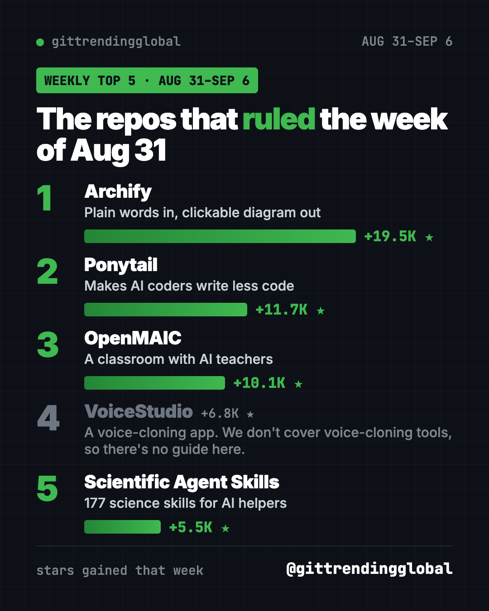
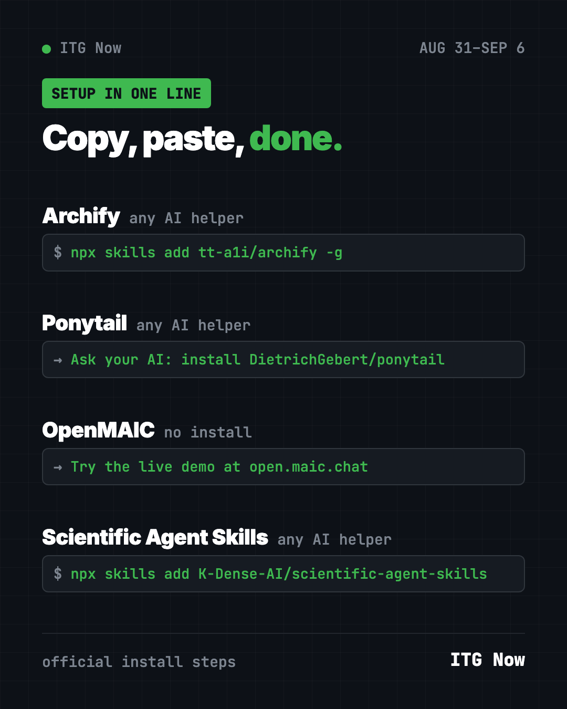

Home › Top lists › GitHub trending this week
Trending GitHub Projects August 31, 2026: The Top 5
- Published 15 Oct 2026
- Updated 16 Oct 2026
- 6 min read
- By the ITG Now team
Trending GitHub projects August 31 2026 to September 6: Archify won again, this time with +19.5K stars, up from +14.9K the week before. Ponytail, a skill that makes AI write less code, came second. An AI classroom called OpenMAIC took third.
One of these can help you at home today: a free AI tutor with a live demo. The others make your AI coding helper sharper or turn it into a lab assistant. Here's each one, in plain words.
Key takeaways
- Archify led Aug 31 to Sep 6 with +19.5K stars, its second week in a row on top.
- Ponytail makes AI coding helpers write less, simpler code.
- OpenMAIC turns any topic into a lesson with AI teachers and classmates. There's a live demo.
- Scientific Agent Skills gives AI helpers 177 science skills.

The trending GitHub projects August 31 2026 at a glance
| Rank | Repo | Stars this week | What it does | Best for | Free? | Setup |
|---|---|---|---|---|---|---|
| 1 | Archify | +19.5K | Plain words in, clickable diagram out | Anyone who explains ideas | Yes (MIT) | One command |
| 2 | Ponytail | +11.7K | Makes AI write less code | People coding with AI | Yes (MIT) | Two lines in Claude Code |
| 3 | OpenMAIC | +10.1K | AI classroom from any topic | Students, teachers, parents | Yes (MIT), AI key needed to self-host | Live demo or self-host |
| 4 | VoiceStudio | +6.8K | A voice-cloning app. We don't cover voice-cloning tools, so there's no guide here. | n/a | n/a | n/a |
| 5 | Scientific Agent Skills | +5.5K | 177 science skills for AI | Researchers, students | Yes (MIT) | One command |
Star gains cover Aug 31 to Sep 6, 2026. Totals were checked on GitHub on October 16, 2026.
1. Archify: back on top, and bigger
Stars: +19.5K this week · about 84K total
What it is: A skill for Claude Code, Codex and other AI helpers. Describe an idea or a plan. Archify draws a clean, interactive diagram you can click through. It also led the week before.
Who it's for: Anyone who explains processes: teachers, managers, founders.
Everyday use: "Draw how our family's monthly budget flows from paychecks to savings."
Install it: Copy and paste this:
npx skills add tt-a1i/archify -g
Let Claude or Codex do it:
Install Archify from github.com/tt-a1i/archify and draw a diagram of how a new customer signs up for my service.
Our Archify guide has more examples.
2. Ponytail: the lazy (in a good way) coding rule
Stars: +11.7K this week · about 164.3K total
What it is: A skill that makes your AI coding helper "think like the laziest senior dev in the room," as its tagline puts it. Before writing new code, it checks if something simpler already exists. Less code means fewer bugs.
Who it's for: Anyone whose AI helper writes 200 lines when 20 would do.
Everyday use: The README's own example: a date picker that took 335 lines without Ponytail took 10 lines with it.
Install it: In Claude Code, paste these two lines, one at a time:
/plugin marketplace add DietrichGebert/ponytail
/plugin install ponytail@ponytail
Let Claude or Codex do it:
Install the Ponytail skill only from github.com/DietrichGebert/ponytail and confirm it is active.
See our Ponytail guide for Codex and other helpers.
3. OpenMAIC: a classroom run by AI
Stars: +10.1K this week · about 40.8K total
What it is: An open-source AI classroom from a Tsinghua University team. Describe a topic or upload your notes. It builds a lesson with slides, quizzes and simulations. AI teachers and classmates talk, draw on a whiteboard and answer you out loud. You can export the slides as PowerPoint.
Who it's for: Students, teachers, homeschooling parents and lifelong learners.
Everyday use: Upload a hard biology chapter and get an interactive lesson with a quiz at the end.
Install it: Try the live demo at open.maic.chat first. To run it yourself, you need Node.js, pnpm and an AI key. Copy and paste this:
git clone https://github.com/THU-MAIC/OpenMAIC.git
cd OpenMAIC
pnpm install
cp .env.example .env.local
pnpm dev
Add your OPENAI_API_KEY to .env.local, then open http://localhost:3000.
Let Claude or Codex do it:
Set up OpenMAIC from github.com/THU-MAIC/OpenMAIC on my computer, ask me for my AI key, and open a lesson about photosynthesis.

4. Scientific Agent Skills: a lab assistant for your AI
Stars: +5.5K this week · about 50.3K total
What it is: 177 ready-made science skills from K-Dense. They cover biology, chemistry, medicine, physics, earth science and more. They work with Claude Code, Codex, Cursor and similar helpers.
Who it's for: Researchers, grad students and science teachers.
Everyday use: "Analyze this spreadsheet of lab results and make a chart I can put in a paper."
Install it: Copy and paste this:
npx skills add K-Dense-AI/scientific-agent-skills
Let Claude or Codex do it:
Install Scientific Agent Skills from github.com/K-Dense-AI/scientific-agent-skills and list the 5 most useful ones for a biology student.
See Scientific Agent Skills on GitHub
Which one should you try first?
- You want to learn something new: open the OpenMAIC demo. Zero setup.
- You explain plans: add Archify.
- You code with AI: add Ponytail.
- You do research: try Scientific Agent Skills.
💡 Tip: Skills are just instruction files. If one doesn't fit, you can remove it in a minute.
For the bigger picture, see the top 5 GitHub repos of September 2026 and September 2026 in AI. Next up: the week of Sept 7.
FAQ
What were the trending GitHub projects August 31 2026?
Archify (+19.5K stars), Ponytail (+11.7K) and OpenMAIC (+10.1K) took the top three. A voice-cloning app we don't cover came fourth, then Scientific Agent Skills (+5.5K).
Can I try OpenMAIC without installing anything?
Yes. The README links a live demo at open.maic.chat.
Does Scientific Agent Skills work with Codex?
Yes. Its 177 skills work with Claude Code, Codex, Cursor and similar AI helpers. You add them with one command.
What does Ponytail actually change?
It tells your AI helper to reuse what already exists and write the smallest code that works.
Keep reading

Trending GitHub Repos October 2026: The Top 5 So Far
The trending GitHub repos of October 2026 so far: a free Photoshop-style editor, an AI art studio, a big AI model for gaming PCs and more, explained.

Trending GitHub Repos This Week, Oct 5 2026: The Top 5
Trending GitHub repos this week Oct 5 2026: Matt Pocock's skills, the openGym workout tracker, e2e testing, HyperFrames video and claude-mem memory.

GitHub Trending September 28, 2026: Hindsight and Paperclip
GitHub trending September 28 2026: Hindsight, Paperclip, NVIDIA's OpenShell and a free 542-lesson AI course, with setup steps for each.